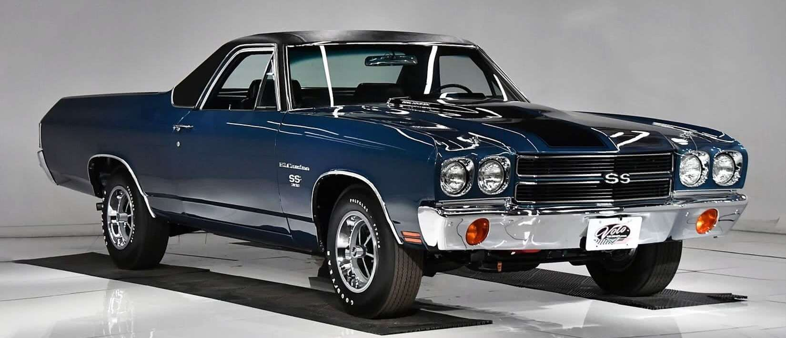
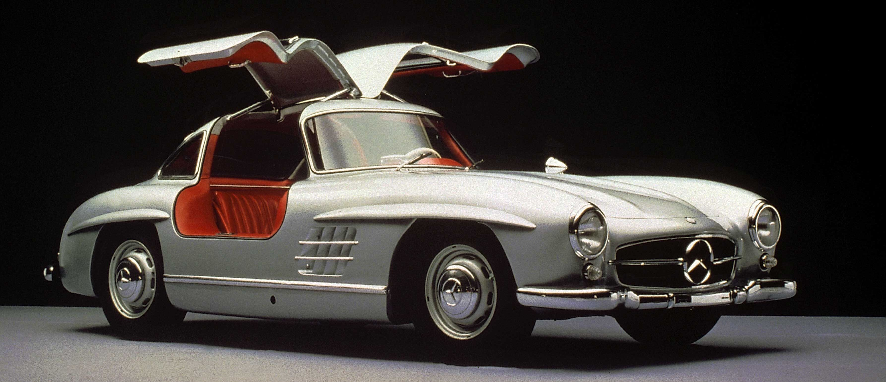

A história dos carros remonta ao século XIX, quando os primeiros veículos a vapor foram construídos. No entanto, foi com a invenção do motor a combustão interna, no final desse século, que os carros passaram a se popularizar. A produção em massa, iniciada por Henry Ford no início do século XX, tornou os carros mais acessíveis.
Desde então, a história dos carros tem sido marcada por constantes avanços tecnológicos, como o uso de motores elétricos e a introdução de sistemas de segurança e conforto cada vez mais sofisticados. A indústria automotiva também tem sido um importante impulsionador do desenvolvimento econômico e social em muitos países.
Hoje, os carros continuam sendo uma parte vital da vida cotidiana de muitas pessoas e contribuem para a mobilidade e a independência individual. No entanto, também são vistos como responsáveis por problemas ambientais e de trânsito, o que tem levado a um aumento na busca por alternativas, como transporte público, bicicletas e veículos elétricos.